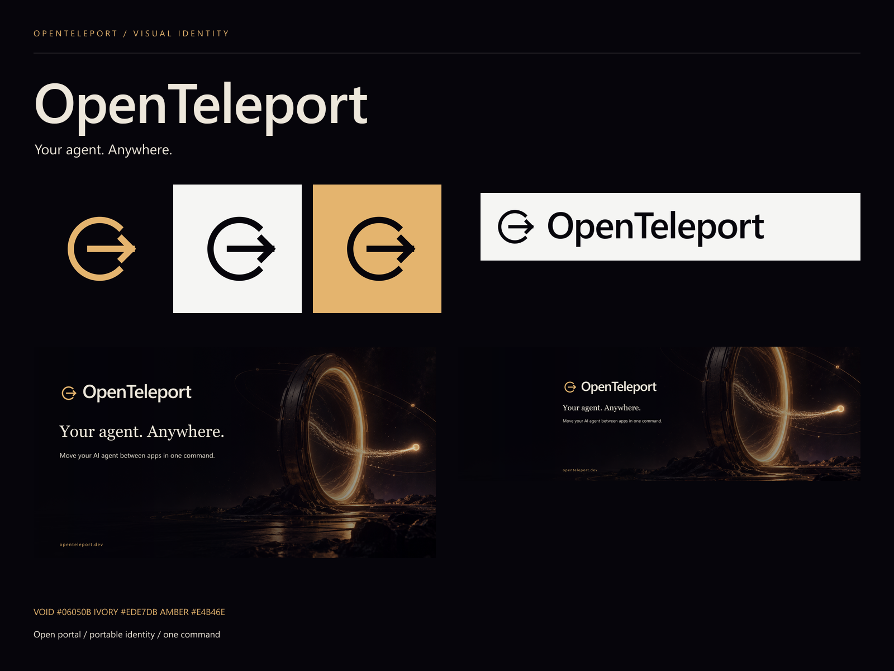

OpenTeleport
Your agent. Anywhere.
Otwarty portal i strzałka oznaczają przenoszenie agenta między aplikacjami. Czerń, kość słoniowa i bursztyn łączą techniczny charakter narzędzia z motywem podróży.

Pliki i zastosowania
| Materiał | Pliki |
|---|
| Logo poziome / pionowe | logo-horizontal-* / logo-stacked-* (SVG i PNG) |
| Sam symbol | mark-* (SVG i PNG) |
| Avatary 1024 × 1024 | avatar-dark / avatar-light / avatar-amber (SVG i PNG) |
| Favicon i ikony | ../favicon.svg, ../favicon.ico; icon-16/32/48/180/192/512.png |
| X — 1500 × 500 | banner-x.png — odsunięty tekst zostawia miejsce na avatar |
| LinkedIn — 1584 × 396 | banner-linkedin.png |
| GitHub — 1280 × 640 | banner-github.png |
| Podgląd linku — 1200 × 630 | social-og.png |
| Baner prezentacyjny — 1920 × 1080 | banner-community.png |
| Tła | background-portal.png, background-grid.svg / .png, wallpaper-desktop.jpg (1920 × 1080), wallpaper-mobile.jpg (1080 × 1920) |
Warianty logo
dark — jasny napis i bursztynowy symbol na ciemnym tle. light — czarne na jasnym tle. white i black — jednobarwne na przezroczystym tle. color — jasny napis i bursztynowy symbol na przezroczystym tle.
Kolory i typografia
Void #06050B · Ivory #EDE7DB · Amber #E4B46E · Paper #F5F5F3.
Logo: Segoe UI Semibold, awaryjnie Arial. Nagłówki strony: Cormorant Garamond. Polecenia i etykiety: JetBrains Mono. Tekst: systemowy sans-serif. Pliki SVG zachowują edytowalny tekst; do identycznego wyglądu na innych komputerach używaj dostarczonych PNG lub zamień tekst na krzywe w edytorze wektorowym.
Zasady
Zachowuj wolne miejsce wokół symbolu równe przynajmniej 1/4 jego szerokości. Minimalna szerokość logo z napisem: 160 px; poniżej używaj samego symbolu. Favicon ma uproszczony format dopasowany do małych rozmiarów. Nie rozciągaj logo i nie dodawaj cieni. Przezroczyste jasne logo umieszczaj na ciemnym tle. Przycinając banery, sprawdź widoczność napisu i obszar zajęty przez avatar w docelowym serwisie.
Źródła i odtwarzanie
Logo i kompozycje: scripts/build-brand.mjs. Odtworzenie: node scripts/build-brand.mjs; bibliotekę sharp można wskazać przez OPENTELEPORT_BRAND_SHARP. Tło wygenerowane wbudowanym narzędziem imagegen. Prompty zapisano w generation-prompt.txt.